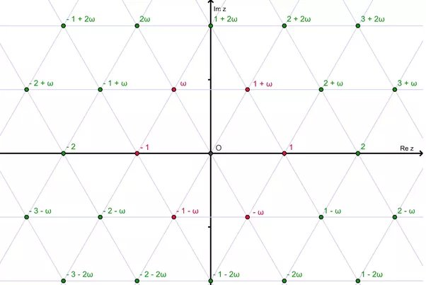
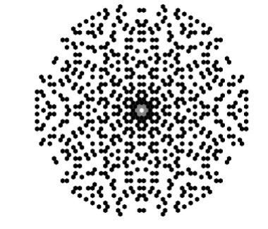

Is it difficult to prove Fermat's Last Theorem for case ?
“Difficult” is in the eye of the besolver.
“Fermat’s Last Theorem” (FLT) for exponent 3 is the statement that
a^3+b^3=c^3
has no solutions in nonzero integers. It would make a very difficult puzzle for the vast majority of high-schoolers, even those who excel at math olympiads such as the IMO. It’s not an easy problem to solve from first principles, as you can plainly see by the unreasonable length of this very Quora answer.
However, proofs of this theorem have been around for over 200 years now, and they are very well understood and not hard to follow if you have the necessary background. They are considered quite elementary, as mathematical proofs go, and every serious student of number theory is expected to understand them well, and even be able to produce them from scratch if necessary.
I wouldn’t call this an “easy” theorem: Even with the full machinery of algebraic number theory, it is still a little intricate. But I also wouldn’t call something “difficult” if it is done in a few pages in almost every textbook on the subject (Wiles’ proof of the Taniyama-Shimura-Weil conjecture, now that’s difficult.)
It'll be good for the proof to be on Quora, so let’s do it. But first, a bit of history.
Contrary to massively prevailing popular belief, Fermat never stated his “last theorem” that a^n+b^n=c^n has no nonzero integer solutions when n>2. In none of his many writings and letters did he ever claim to know how to prove it. The famous marginal note (“which the margin is too narrow to hold”) was published by his son after his death, and if indeed Fermat did write it, he never once repeated that claim in public or in correspondence.
He did state the cases of exponent 3 and 4 quite often, and put them forth as a challenge to his contemporaries, starting around 1636. We don’t know if he actually knew how to prove the case n=3. He published a proof for n=4, which is much easier. The fascinating history of the misunderstanding of the circumstances of the birth of FLT is probably out of scope for this question, but you can see some of the highlights here.
At any rate, Fermat wasn’t the first person (loc. cit.) to consider the equation a^3+b^3=c^3, but he certainly made it famous.
The first serious claim for a proof was put forward by Euler. As early as 1753 he claimed to have one (in a letter to Goldbach[1], dated August 4), but the first known written account of it is in his “Vollständige Anleitung zur Algebra” from 1770, and it is incomplete. Most experts believe he did have a complete proof (the gap can be filled with results from a 1760 paper of his), or at least he would have been able to produce one had the gap been pointed out to him. See Bergmann[2]and Mačys[3].
As of this writing, the Wikipedia article which discusses proofs of FLT for small exponents covers the case n=3 with reference to “A crucial lemma” that is nowhere proven, and this is indeed the same gap present in Euler’s 1770 proof. It is possible to close this gap with a careful analysis of the quadratic form X^2+3Y^2, but in the proof I reproduce below I will take a more modern approach, closer to Gauss’ proof.
Gauss, it should be noted, was not a huge fan of FLT. In an 1816 letter to Olbers he wrote (see Ribenboim[4]):
I confess that Fermat's theorem as an isolated proposition has very little interest for me, because I could easily lay down a multitude of such propositions, which one could neither prove nor dispose of.
I think it is useful for modern students to understand this. FLT in and of itself (“as an isolated proposition”) is indeed quite devoid of interest. Of course, its legendary status motivated many prominent mathematicians to attack it, thereby developing magnificent theories that would apply to countless other problems and create the whole field of modern number theory.
Alright, enough history. Let’s get started.
Outline
The plan of attack is a very common one in number theory. We have an equation that looks like some high power which is equal to the sum of various things:
X^n = A+B+C+\ldots
We attempt to factor the right hand side so that it becomes a product, rather than a sum.
X^n = F\cdot G\cdot H \cdots
Then, we try to show that F, G, H and so on are relatively prime, which would force each of them to itself be an n^\text{th} power. This usually turns out to be a very strong requirement which is either outright impossible, or it can be used to yield a smaller solution of the original equation. Indeed, since we managed to show that F itself is some x^n, we may be able to manipulate things to have
x^n=a+b+c+\ldots
which is an equation that looks very much like the one we’ve started with, but clearly, with a smaller x than X had been. By “infinite descent”, we reach a contradiction: if any solution existed, there would be one with minimal X, contradicting the descent step.
In order to carry out the first step, factoring the right-hand side, we typically need to move up from plain old integers into some number ring, which is a set of complex numbers that includes the usual integers but with a whole lot of new and exciting ones, and where many (though not all) of the rules of arithmetic still apply.
In our case, the equation is
X^3=Y^3+Z^3
Of course, we can also write it as
Z^3=X^3-Y^3 = (X-Y)(X^2+XY+Y^2)
which partially factors the right-hand side. A slightly different factorization was used by Euler, but this still left him with the gap of having to analyze the quadratic forms that emerge. Here, we prefer to factor the thing completely, by introducing a cube root of unity.
The Eisenstein Integers
The complex numbers are usually defined as the set of expressions a+bi where a,b are real numbers and i is a new entity satisfying i^2=-1. We will now do something very similar by introducing an entity \omega and looking at the expressions a+b\omega where a,b are integers while \omega satisfies \omega^3=1 but \omega \neq 1. Note well: a,b are integers now, not arbitrary real numbers.
The set of all such expressions makes up a ring we will call R. It is a “ring” because you can add, subtract and multiply those numbers, but not necessarily divide them, much like the integers \mathbb{Z} themselves. The elements of R are sometimes called Eisenstein Integers in honor of Gotthold Eisenstein, one of the 19th century’s mathematical superstars who didn’t live to be 30 years old.
If you’re comfortable with complex numbers, you can simply take \omega to be
\displaystyle \omega = e^{2 \pi i /3} = \frac{-1+i\sqrt{3}}{2}
The numbers a+b\omega then look like this, in the complex plane:

The Eisenstein integers are the red/green dots (the red ones are the “units”, as we will shortly explain). Pay special attention to that green 1-\omega sitting there at the lower right; we will be using it a lot.
To get comfortable working with Eisenstein integers you must first notice a very important property of the number \omega:
\omega^2+\omega+1=0.
This follows immediately from the fact that \omega^3-1=0, which is the same as (\omega-1)(\omega^2+\omega+1)=0. Since we decreed that \omega \neq 1, it must make the other factor vanish. Of course, if you consider \omega to be the complex number e^{2 \pi i /3}, you can also just prove this directly.
This property of \omega is the reason we can settle for a+b\omega, and we don’t need to look at things like a+b\omega+c\omega^2. Indeed, whenever an \omega^2 emerges, you can just replace it with -\omega-1.
With that, you can start playing around with Eisenstein integers.
(2+\omega)+(3-4\omega) = 5-3\omega
(5+\omega)(2-3\omega)=10+2\omega-15\omega-3\omega^2=10-13\omega+3(\omega+1)=13-10\omega
Once you get used to them, Eisenstein integers are no more mysterious than ordinary integers, but they are much more good-looking. The integers are just boring, equally-spaced dots on the number line, but the Eisensteins are such a pretty lattice, aren’t they? Here, for example, are the Eisenstein primes, to be defined shortly:

Arithmetic in R
From now on, when we say “number”, we mean an Eisenstein integer, meaning an element of R. Since those numbers can be added, subtracted and multiplied, we can migrate all the standard definitions of arithmetic and try to understand what becomes of them. Here are all of the things we will need. Some of these may look familiar, some probably not.
- If x,y are numbers, we will say that x divides y if there is some number m such that mx=y. This is the exact same definition you’re used to for the ordinary integers. We will write x\mid y when x divides y. For example, earlier we’ve noticed that (5+\omega)\mid (13-10\omega), and also (2-3\omega)\mid (13-10\omega).
- We say that x and y are congruent modulo m, written x\equiv y \pmod{m}, if m divides the difference x-y. This is, again, the exact same definition as the one for ordinary integers, but now all three participants (x,y and m) are allowed to be “new” numbers: elements of R.
- If x\mid 1 we say that x is a unit. We don’t usually talk about “units” in school arithmetic, because we usually do school arithmetic with positive integers only, and then the only unit is 1 itself. But among the integers we already have two units: 1 and -1, and it’s useful to call them out. In our new number system we actually have six of them, so they certainly deserve a name. The units can also be thought of as the invertible elements of R: they are the only numbers who have a multiplicative inverse. You should go ahead and prove that 1,-1,\omega,-\omega,1+\omega and -1-\omega are all units. They are, in fact, the only ones.
- If x\mid y and y\mid x we will say that x and y are associates, and write x \sim y. This is also not usually explained in school arithmetic, because among positive integers two numbers are associates only if they are the same, and it seems silly to define something that’s just another way of saying “equal”. However, if you think about arithmetic among the integers, you’ll notice that 7|(-7) and (-7)|7, so 7 and -7 are associates. In fact, you should prove that the associates of x are simply the products xu of x by some unit u, just like the associates of 7 are the products of 7 by \pm 1 in the ordinary integers.
- We say that x is irreducible if it is not a unit, but the only things dividing it are units and its associates. In other words, a non-unit x is irreducible if x=yz implies that either y or z are units, so the “factorization” is as useless as writing 17=(-1)(-17). This should sound familiar: it is the usual definition of “prime” for ordinary integers. In ring theory, the correct term is irreducible, because “prime” is defined in a slightly different way. In our ring, the two terms mean the same thing, so we will simply call the irreducible elements primes.
- For every prime p and every number x, we can consider the highest power of p which divides x, or “the number of times” p divides x. This is called the p-valuation of x, denoted \text{val}_p(x). It is a very simple notion but usually also excluded from school arithmetic, where we would have found that the 2-valuation of 40 is 3 since 2^3 divides 40 but 2^4 does not. When k=\text{val}_p(x) we write p^k\mid \mid x to denote that p^k\mid x but no higher power of p manages to divide x. So 2^3\mid \mid 40, for example.
- Two numbers are called relatively prime if only units divide both of them. Again, this is exactly the same definition you’re used to from school arithmetic.
- If x=a+b\omega, we call \bar{x}=a+b\omega^2=(a-b)-b\omega the conjugate of x. The reason is that this is just the ordinary complex conjugate of x, and therefore the product N(x)=x\bar{x} is always a positive integer, called the norm of x. You should work this out: show that N(a+b\omega)=a^2-ab+b^2. Show that N(xy)=N(x)N(y), and conclude that the units are precisely the numbers of norm 1, and that numbers with a prime norm must be prime (warning: the converse isn’t true. The norm of 2 is 4, but 2 is still prime among the Eisenstein integers).
- For any two numbers x,y a greatest common divisor (gcd) is a number d which divides both of them, and is divisible by any other number with that property. So d\mid x, d\mid y and if e\mid x and e\mid y then e\mid d. Notice how “greatest” shifted meaning from “largest” to “being divisible by all other contenders”. The size properties of the ordinary integers can also be migrated to the Eisenstein integers, using the norm (this is what “Euclidean domain” means), but greatest common divisors can be defined without reference to size, and that’s a useful observation. Notice that I wrote “a gcd” rather than “the gcd”: in the presence of units and associates, we shouldn’t expect the gcd to be unique.
- Every number can be written as a product of primes, and be so written in essentially just one way. This is the analogue of “unique factorization” of ordinary integers. The “essentially” means that you can (of course) introduce units into the factorization if you wish, and you can also rearrange the order of the primes, but that’s it. If the same number x is written in two ways as a product of units and primes, there will be the same primes showing up in both ways, and each will show up the same number of times. Proving the existence and uniqueness of factorization into primes isn’t hard using the norm we just defined. If you know some ring theory, you will recognize that R is a Euclidean domain, and hence a principal ideal domain, and hence a unique factorization domain.
Finally, as promised, we are going to give 1-\omega a name: we’ll call it \lambda = 1-\omega. Now, try to work out the following (relatively easy) exercises:
- N(\lambda)=3
- \lambda^2 \sim 3
- \lambda is prime
- Every number x is congruent to -1,0 or 1 modulo \lambda. Hint: Take any number x=a+b\omega, divide it by \lambda, and then simplify the fraction by multiplying numerator and denominator by \bar{\lambda}. If the result is in R, the number x is divisible by \lambda to begin with. If it’s not, what happens if you add or subtract 1 from x? This result should be seen as an analogue of the fact that among ordinary integers, every number is congruent to -1,0 or 1 modulo 3. In our new numbers, \lambda plays a very similar role to 3.
- Among ordinary integers, every cube x^3 is congruent to -1, 0 or 1 modulo 9. This is a very useful fact in understanding cubes and their sums. Show the analogous result for Eisenstein integers: if \lambda \nmid x then the cube x^3 is congruent to -1 or 1 modulo \lambda^4.
- As an illuminating aside, show that among ordinary integers, a^3+b^3=c^3 is impossible if none of a,b,c is divisible by 3. Use the fact we just mentioned about cubes modulo 9. This means that the so-called “First Case” of FLT is trivial for n=3.
- The reason we are obsessed with \lambda is that we’re going to factor x^3+y^3 into (x+y)(x+\omega y)(x+\omega^2 y). Assuming that x and y are themselves relatively prime, show that the only prime which could possibly divide both x+y and x+\omega y is \lambda. Remember, from the outline, that we are hoping to make the factors relatively prime, so we can conclude that each of them is a cube; this is a decisive step.
The Proof
If the world had been fair, having done all this great work to build the ring R and understand its arithmetic, the proof should now have been a walk in the park. But the world isn’t fair, highness, and the proof is still intricate. But it’s useful to realize that it is now, at the very least, not insanely creative or surprising: it follows the steps we outlined earlier fairly routinely.
We will first make the problem a bit harder. Instead of showing that x^3+y^3=z^3 has no solution in R, we will show that for any unit u you care to pick, the equation x^3+y^3=uz^3 has no solution either. Why are we doing this? Well, when we “descend” from a potential solution to a smaller one, a unit may get introduced. Therefore the argument would break if we limited ourselves to the case u=1, and it’s easier to allow ourselves that flexibility from the outset. Luckily, the enhanced equation is still unsolvable, making for a clean proof.
So now, suppose that we have three numbers (meaning Eisenstein integers) x,y,z such that x^3+y^3=uz^3. We may suppose that x,y and z are pairwise relatively prime: if some prime divides two of them, it must also divide the third, and we can eliminate it.
If \lambda doesn’t divide any of x,y,z, we observe that it certainly doesn’t divide the unit u, so everything in this equation is \pm 1 modulo \lambda. But you can’t make \pm 1 \pm 1 = \pm 1 work, so that’s out of the question. \lambda must divide at least one of x,y or z, and in fact it’s exactly one of them since they’re pairwise relatively prime. We may assume that it is z that’s divisible by \lambda: if it’s x or y, the proof is quite the same.
Looking at the equation modulo \lambda^4, recall that you’ve shown that cubes that aren’t divisible by \lambda are actually \pm 1 modulo \lambda^4. So now we have
\pm 1 \pm 1 \equiv uz^3 \pmod{\lambda^4}
Since \lambda doesn’t divide 2, we must actually have 0 on the left here, and so \lambda divides z enough times to make z^3 divisible by \lambda^4. This means that, in fact, \lambda^2\mid z. If \lambda\mid \mid z then z^3 would merely be divisible by \lambda^3.
Let’s summarize what we know. We have
x^3+y^3=uz^3
and \lambda^2\mid z while \lambda \nmid xy.
We now, at last, use the main feature of the Eisenstein ring to factor the left hand side:
(x+y)(x+\omega y)(x+\omega^2 y) = uz^3.
You should check that this factorization works out by expanding it if you hadn’t seen it before. It’s really just the observation that 1+t^3=(1+t)(1+\omega t)(1+\omega^2 t), applied to t=x/y.
If a product of some things is a cube, and if the things are relatively prime, each of them must itself be a cube. As we’ve observed, the factors in our left-hand side may not be relatively prime, but the only possible prime that could divide a couple of them is \lambda. So the plan is to carefully count how many \lambda's are everywhere, cancel them, and conclude that what’s left is all cubes.
Since \text{val}_\lambda(z) \geq 2, we must have \text{val}_\lambda(z^3) \geq 6. This means that at least one of the three factors on the left must also be divisible by at least \lambda^2, and we’re going to assume that it’s the x+y factor. Otherwise just replace y by \omega y or \omega^2 y. It’s very convenient that \omega is a unit.
Now, x+\omega y = (x + y) - \lambda y. The first term, x+y, has \lambda-valuation at least 2, but the second one, \lambda y, is only divisible by \lambda once. This means that the difference is also divisible by \lambda just once (this is the simple observation that a number divisible by 17^2 plus a number divisible by 17 but not 17^2 is only divisible by 17. It’s the “ultrametric” property of valuations). The same is true for x+\omega^2 y, so each of these factors contributes just a single \lambda, and everything else must come from the x+y. In summary,
\text{val}_\lambda(x+y) = 3 \text{val}_\lambda(z) - 2
\text{val}_\lambda(x+\omega y) = 1
\text{val}_\lambda(x+\omega^2 y) = 1
Apart from those powers of \lambda, each of those factors must be a cube, and there may be whatever units everywhere. We call the first valuation, the big one, t, so we can write
A=(x+y) = u_1 z_0^3 \lambda^t
B=(x+\omega y) = u_2 x_1^3 \lambda
C=(x+\omega^2 y) = u_3 y_1^3 \lambda
The new numbers x_1,y_1,z_0 are pairwise relatively prime, and none of them is divisible by \lambda since we’ve separated out the precise amount of \lambda's in each term.
Now, behold:
A+B\omega+C\omega^2 = 0.
This is simply because 1+\omega+\omega^2=0. This now reads
u_1 z_0^3 \lambda^t + \omega u_2 x_1^3 \lambda + \omega^2 u_3 y_1^3 \lambda=0
and we can, hooray, cancel out a \lambda:
u_1 z_0^3 \lambda^{t-1} + \omega u_2 x_1^3 + \omega^2 u_3 y_1^3=0
Miraculously, t-1 = 3\text{val}_\lambda(z)-3 is a multiple of 3. Let’s call it t-1=3s. Let us call z_1=z_0 \lambda^s, and we have
u_1 z_1^3 + u_2' x_1^3 + u_3' y_1^3 = 0
(We just gave \omega u_2 and \omega^2 u_3 new names; they are still units). Multiplying by the inverse of u_2' we can rearrange this into
x_1^3+v y_1^3 = w z_1^3
where v and w are still units. This almost looks like our original equation; we just have an extra pesky unit in front of y_1^3. Not to worry, reducing this equation modulo \lambda^2 yields
\pm 1 \pm v \equiv 0 \pmod{\lambda^2}
(Recall that z_1 is still divisible by \lambda), which implies that v=\pm 1 (the other potential units don’t work out). Flip y_1 into -y_1 if needed and obtain
x_1^3+y_1^3 = w z_1^3
which is exactly the equation we started with, but with a possibly different unit in front of the z_1^3 (this is why we insisted on proving the more general theorem), and with \text{val}_\lambda(z_1) strictly smaller than \text{val}_\lambda(z). This is a contradiction, since the first thing we saw was that in any such equation we must have at least \lambda^2 dividing the third variable. This shows that the equation indeed has no solutions in Eisenstein integers, and so it certainly can’t have any plain old integer solutions, proving FLT for exponent 3.
QED!
Footnotes
[2] Über Eulers Beweis des großen Fermatschen Satzes für den Exponenten 3.
[3] On Euler’s hypothetical proof
[4] 13 Lectures on Fermat's Last Theorem: Paulo Ribenboim: 9780387904320: Amazon.com: Books